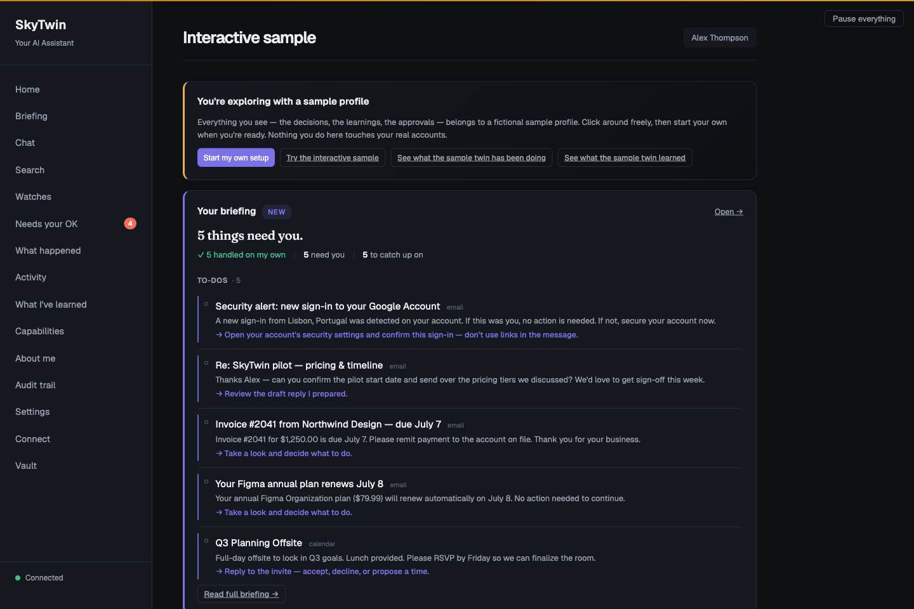
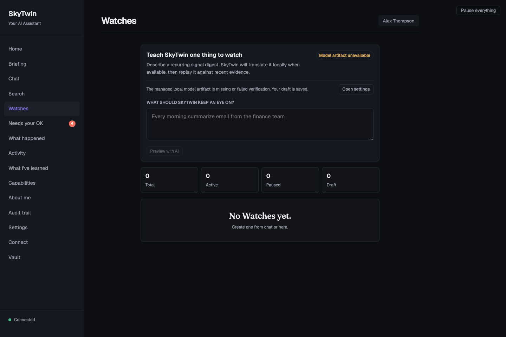

A memory you can actually inspect.
Preferences are structured, versioned records with confidence and supporting evidence. Investigate what your twin has learned instead of treating a chat history as a personality.
How your twin remembers →Open-source personal AI · Apache 2.0
An assistant should learn what matters to you—not make you explain yourself forever. SkyTwin is building a personal twin with memory you can inspect, decisions you can question, and boundaries you control.
Developer preview. Explore fictional data without an account or AI key. Running it requires local source setup; real Google and Microsoft connections are unavailable. What’s ready today?

The idea
Personal AI gets interesting when it has context. It gets useful when you can see that context, correct it, and decide what it is allowed to do.
Preferences are structured, versioned records with confidence and supporting evidence. Investigate what your twin has learned instead of treating a chat history as a personality.
How your twin remembers →See the situation, the proposed action, and why it needs your attention. The sample puts fictional decisions and explanations in front of you so you can judge the interaction for yourself.
Walk through a decision →The source pipeline checks policy, trust, risk, and spend before admitting actions. New users start at observer. A model’s suggestion does not grant permission to act.
Understand the controls →Start with a small, real experience
No inbox access. No provider key. No model download for the sample. Start by seeing whether this feels like a better relationship with software.
Read the screenshot-led tour in your browser. To try the app, follow the source setup guide, then choose Just show me around.
Take the guided tour →Compare the fictional briefing, Needs your OK, and What happened. Look at which situations need a person and what information is shown.
See the product screens →The isolated simulation lets you approve, reject, or correct fixed proposals. Changes last for that session only; they cannot contact a provider or affect a real account.
Understand the sample →Beyond a one-off prompt
A Watch is a read-only digest of signals you choose. The versioned workflow in source lets you review a proposal, replay it against recent signals, activate it explicitly, and return to a previous version.
That is the direction: personal behavior you can improve without losing the ability to understand what changed.
Explore versioned Watches →Advanced source feature. Not part of the disposable sample. AI authoring requires a qualified model/runtime; the maintained embedded model and stock Ollama do not currently qualify. Read-only digests do not send, delete, or spend.

Choose where the thinking happens
Keep reasoning on your machine, or explicitly choose a remote route. These are different boundaries—not interchangeable marketing labels.
Default
Use a compatible embedded runtime and model, or local-only Ollama. Local failure never selects a remote provider. Setup downloads are explicit; a working runtime and model are still required.
Local setup and model requirements →Verified route
TrustedRouter is admitted only for explicit interactive calls after SkyTwin verifies fresh same-session gateway attestation and an exact-byte confidential-route receipt. Verification failure returns no content and never falls back. NEAR AI remains unavailable.
TrustedRouter trust record ↗ · SkyTwin’s verification boundary →Explicit opt-in
Bring a hosted provider under its own terms. Prompts cross the network; this mode does not make a confidential-computing promise.
Compare inference modes →Go as deep as you want
You do not need to understand the architecture to understand the product. And if you want the architecture, we will not hide it from you.
Tour, setup, everyday concepts, and answers in plain language.
Make it yoursMemory, privacy, models, approvals, and what a Watch can do.
Build on itScoped MCP, exact source references, APIs, operations, and contribution guides.
All documentation · FAQ · Agent guide · MCP setup · Technical reference · llms.txt · Evidence deck
Where we are today
The long-term goal is a personal twin that handles more of the routine, on your terms. Today, the supported entry point is a local, fictional-data developer preview.
v0.7.0-beta remains blocked by
signing, notarization, clean-machine verification, and
release-wide evidence. Source checks do not certify a downloadable
artifact. The update client can check for artifacts, but
signed-update installation is not yet verified.
Full release status → · Integration status · Google access status · Claim ledger · Download technical preview (older artifacts; not the current sample)
Signals become context, then typed candidate actions. Policy checks trust, spend, provenance, risk, and approvals before a route can proceed. Supported paths record explanations and feedback; release-wide coverage is still under audit. Missing provenance is untrusted external—not an invitation for a model to assign itself authority.
SkyTwin is Apache-2.0 open source. Use it, inspect it, modify it, and build on it. Try the sample, report a confusing interaction, or contribute a narrow, tested improvement. Personal features are intended to remain free; team and hosted offerings are future plans, not products available today.
Contribution guide · Issues and feedback · Product direction
Your next five minutes
Start with a fictional day. Decide what you would want it to learn.
Screenshot-led walkthrough. No account needed to read it.